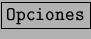
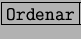
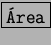

La utilización de listas es muy común en las hojas de cálculo (clientes, teléfonos, etc.). Las lista deben cumplir una serie de características para que su utilización sea lo más efectiva posible.
Para crear una lista a partir de los datos de una hoja vamos al [Piloto de Datos] en el menú de [Datos]. Se nos mostrará el cuadro de seleccionar fuente.
Presionando aceptar se nos mostrará el cuadro de Pilot de Datos
donde colocaremos por el método arrastar y soltar los datos que queramos que
se muestren. En el botón de  podremos acceder a una serie de
características para afinar aún más la lista.
Ordenación de listas. Para ordenar listas sólo tenemos que seleccionar el área a ordenar y elegir [Ordenar] dentro del menú de [Datos] e indicar el método de ordenación y la columna por la que se ordenará, entre otras opciones de personalización. Se debe tener en cuenta que hemos de seleccionar la opción de Área contiene encabezamientos de columna para que no ordene los encabezados junto con los datos. Para esto seleccionaremos la solapa de Opciones dentro del cuadro  y marcaremos la opción  contiene encabezamientos de columna, a continuación aceptaremos y se creará la lista.
Filtrado de listas.
Con el uso de filtros dentro de las listas conseguiremos analizar aquellos datos
que interesan. Por eso, al crear la lista se añade un botón denominado
 que permite definir los datos que se van a mostrar dependiendo
de aquellos datos que se busquen.
Bases de datos.
StarCalc puede trabajar conjuntamente con bases de datos profesionales. Se
pueden importar tablas desde bases de datos que StarOffice tenga registradas para trabajar
directamente con listas. En la versión 5.2 de StarOffice se instala por defecto el soporte
para Adabas siempre y cuando dicha base de datos se encuentre en el sistema.
El uso de bases de datos tiene su tratamiento en la sección de StarBase.
que permite definir los datos que se van a mostrar dependiendo
de aquellos datos que se busquen.
Bases de datos.
StarCalc puede trabajar conjuntamente con bases de datos profesionales. Se
pueden importar tablas desde bases de datos que StarOffice tenga registradas para trabajar
directamente con listas. En la versión 5.2 de StarOffice se instala por defecto el soporte
para Adabas siempre y cuando dicha base de datos se encuentre en el sistema.
El uso de bases de datos tiene su tratamiento en la sección de StarBase.